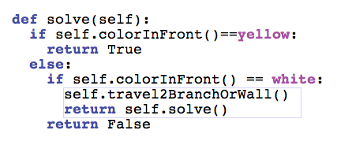
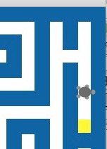
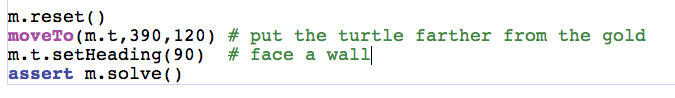

CSI 106 Muhlenberg College - Michael Toth
Page 18
| Notice we just want to make the test pass. Just adding the travel2BranchOrWall will do that. |
 |
| If
we can't move forward, we check the other directions too. Right now we
just check to see if we can move forward. Let's deal with the
case where we can't move forward. Put the turtle facing a wall.  |
 |